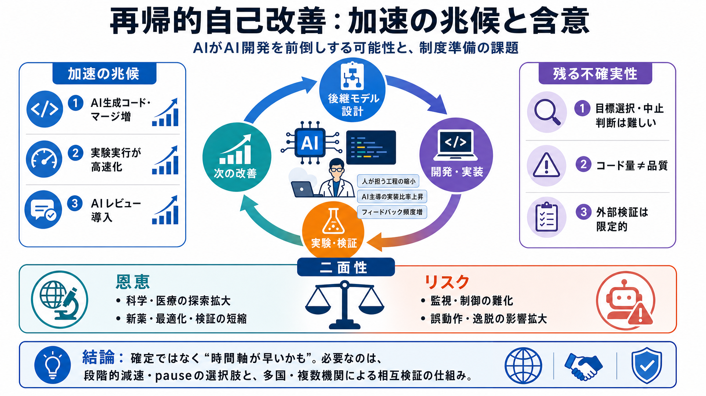

prepositions - Difference between To and In
"To" is generally a preposition of direction. "In" is generally a preposition of location. The difference is simply aski…

AI開発が「人が担う工程の縮小」と「AIが実装を進める比率の上昇」により、改良サイクルを前倒ししている可能性を整理します。
能力が上がるだけでなく、開発の“回転”自体が速まると、影響が社会で顕在化するまでの猶予が減ります。
AI中心化は、改良の“手続き”を自動化するだけでなく、試す回数とフィードバック頻度を増やし得ます。
公開ベンチマークの伸びに加え、社内観測を用いて「AIがAI開発を前倒ししている」可能性を補強します。
「AIが書いたコードが大半を占める」などの指標が、開発サイクルの短縮を示唆します。
実験の“実行”は極端に速い一方、どの目標を選ぶか等の“研究の判断（テイスト）”にはギャップが残ります。
「8倍のコード生産」などの数値は、品質ではなく量を測ってしまう限界があり、過大評価になり得ます。
加速が本物なら、科学・医療などで大きな恩恵になり得ますが、同時に人間の制御リスクも増します。
AI開発の自律度が増すほど、アラインメント・監視・検証の設計対象も広がり、ガバナンス設計が難しくなります。
開発速度が上がっても、ボトルネックは別領域（人間レビュー、制度、計算資源、検証枠組み）へ移ります。
悪化を防ぐための選択肢として、最前線AI開発の段階的減速や一時的停止（pause）の“可能性”を提示します。
単独の停止では不十分で、多国の複数研究機関が同条件で停止し、互いの停止を検証できる体制が必要です。
内部データは説得的でも、外部から検証可能な独立再現性や指標定義の影響には限界が残ります。
再帰的自己改善の“確定”ではなく、“速度感が制度準備より早まるかもしれない”点を軸に、減速・停止と検証の仕組みづくりが要ると述べます。
"To" is generally a preposition of direction. "In" is generally a preposition of location. The difference is simply aski…
The word to in that usage is called a particle. To has another very common use, and that is as an indicator of location.…
“Into” is a preposition that shows what something is within or inside. As separate words, in and to sometimes simply win…
With many verbs of motion, "on" and "in" have a directional meaning and can be used along with "onto" and "into." This i…
Toe-in in inches is the difference between measurements A and B in the diagram below. ... The Shop Manual 0.25 inch of t…